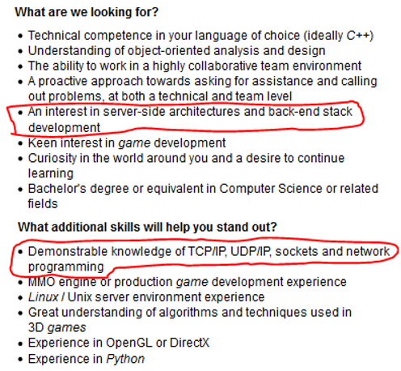
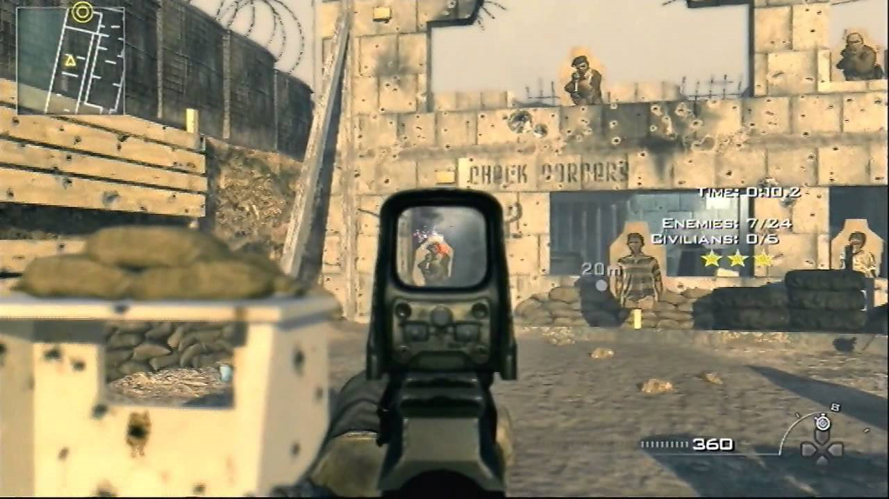
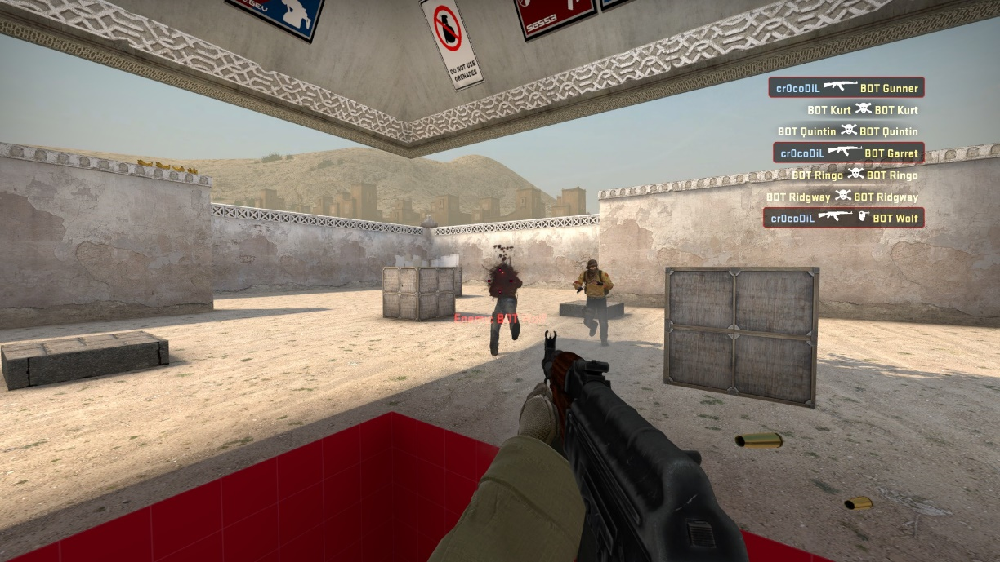
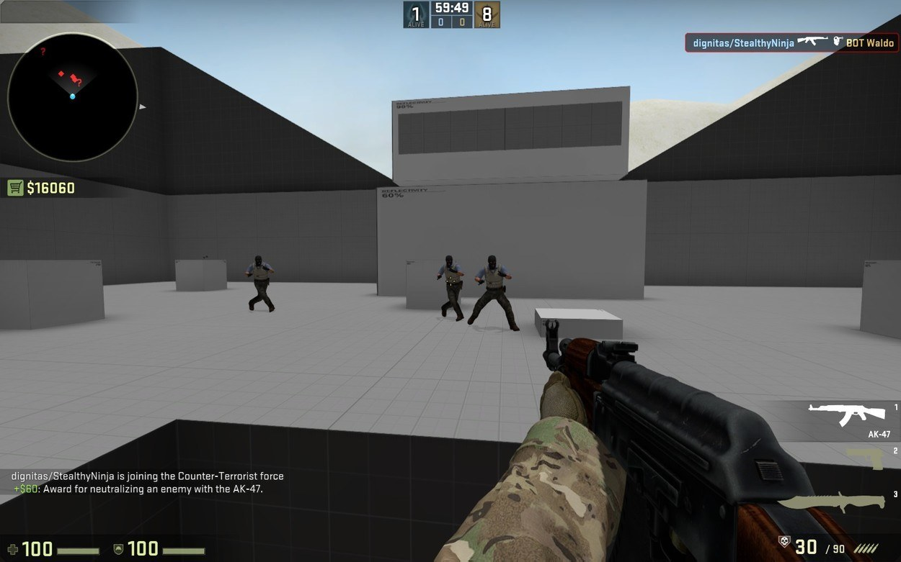
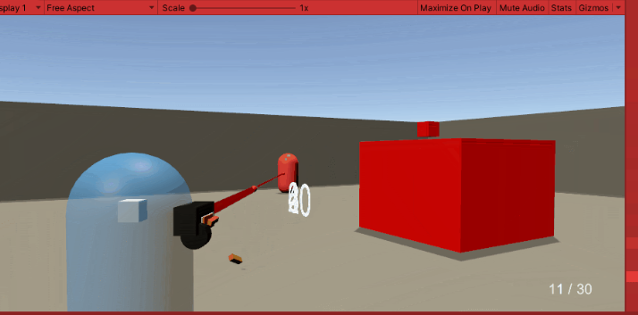
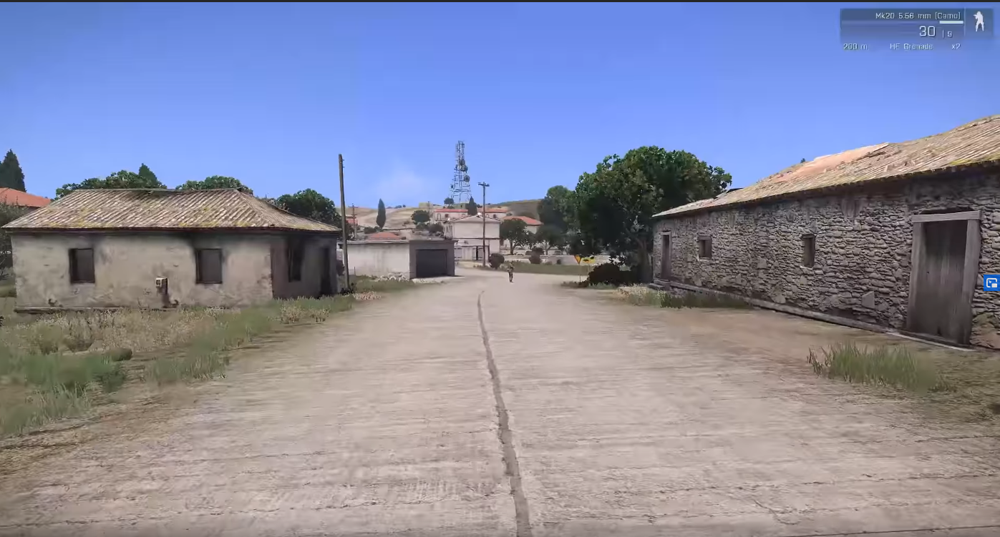
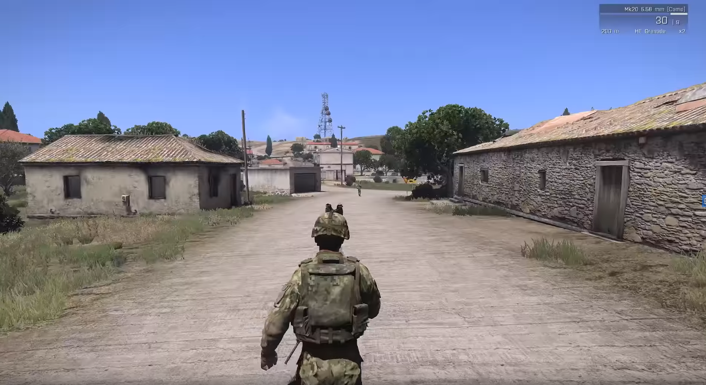

Blog

Project Idea - 18/8/2020
During school, I didn’t really know what I wanted to do or what I was really super passionate about to be honest. Growing up and being exposed to a variety of different types of people, I was eventually introduced to computers and video games. Both which I found interesting as I love to learn new things and find out how and why stuff works, especially with technology. I do love creating things that users can benefit, inspire, or make a positive impact on someone else. The programming and software industry is pretty cutthroat unless you are a Bill Gates or some high IQ big brain genius. You’re going to have to work hard if you plan to want to join this career path or become a programming in general. In other words, It is a bit like being picked up and thrown in the deep end of the pool and not knowing how to swim. But you learn quickly though. One day I randomly wanted to know how many professional programmers there are in the world so I had a quick google and you can see the result below:
The programming and software industry is pretty cutthroat unless you are a Bill Gates or some high IQ big brain genius. You’re going to have to work hard if you plan to want to join this career path or become a programming in general. In other words, It is a bit like being picked up and thrown in the deep end of the pool and not knowing how to swim. But you learn quickly though.
One day I randomly wanted to know how many professional programmers there are in the world so I had a quick google and you can see the result below:
According to (Daxx, 2019), by last year the number of professional programmers (developers) is nearly the same number of the population in Australia which is 25 million. It can clearly be seen that it is quite a growing industry from the statistics, which is good for job employment depending where in the industry you want to go.
To be able to be a programmer I feel the following key skills are necessary which are:
Problem solving skills
Self-learning
Patience
Research & Knowledge
A lot of time
There will be times where you will want to hit your head against the keyboard and question your intelligence level. But this is something that is common in programming and computer science in general.
People who I found inspiring to join this career were the following big 4:
Bill Gates
Steve Jobs
Mark Zuckerberg
Gabe Newell
People who all work hard, dropped out of college/university and made big names for themselves
So, for the skills that I would like to work on in my project these are the following which I have chosen:
Maths skills
Programming ability
Networking skills (if time allows for it)
I personally don’t like maths (even though I’ve learnt matrices, vectors, trigonometry and coordinates in this degree), it’s just something I have always hated for a long time. So by using some vector3’s, basic rotations and coordinates I am going to try to bury this problem once and for all.
Also, anyone who plans on become a game’s programming should be sufficient as it can sometimes be a requirement on job openings. This brings me to my next point of networking, this is also sometimes a requirement for some game programming job ads as seen below:
So, doing this will give me a better understanding of how networking works and will contribute to my portfolio. Finally doing a programming project for IGB400 is smart, as to sufficient in any language it always comes down to how much time, effort and practise you put in. So, this is the reason I have decided to do a programming project for IGB400 with those skill sets in mind.
After some thinking of what type of project, I was going to do for IGB400, I came to the conclusion of wanting to do something with the shooting genre. Since it was something that I personally enjoyed and would also find motivating to do. Shooting games are extremely popular in the video game industry and there are many different types such as:
First Person Shooters (FPS)
Third Person Shooters
Top Down Shooters
Arena Shooters
Top Down Shooters, etc
So, after narrowing my choices down I then had to decide on what types of shooter I was going to do and what mechanics I was going to incorporate into it. So, after some basic research in the following franchises such as:
Call of duty
Battlefield
Halo
Killing Floor
CounterStrike
The following skills will be needed to achieve this:
Unity
C#
Some basic maths
Some examples of what an aim trainer could look can be seen below:
MW2 and CSGO:
  It would be a basic level built with probuilder and most likely stationary movement for the player to aim at targets. The aimbot would be togglable with a button that can be turned on and off. The aimbot would snap to the head (if the target is a humanoid). But this will have to be implemented depending on the target type (most likely it will just be a the target’s transform.position.
If I can get that all working correctly with the aimbot I would also like to create a separate scene (in the same Unity file) that has a third person controller using some basic networking for multiplayer.
To do this would need a following skills:
Unity
Probuilder for the level
Networking using Photon
C#
An example of what the third person controller can be seen below:
The third person multiplayer scene would only use capsules (saving time for animations and blending etc) and a basic third person shooting gun as shown before.
The second part of the project is a bit of a stretch goal I will admit, but if it can be pulled off that would be ideal. The main two concepts that will be the hardest things to tackle for this project is:
Learning how to use networking with the Proton engine
Mathematical in code
Having time to test and bugfix to the multiplayer and aim trainer
Being able to achieve both levels would demonstrate a decent understanding of game theory, mathematics, code ability and game perspective types.
An example of both perspective types that will be demonstrate can be seen below:
First Person:
Third Person:
References
Arma 3, Bohemia Interactive 2013
Unity, 2020
CounterStrike Global Offense, Valve 2020
ModernWarfare 2, Infinity Ward 2009
Wargaming, 2020
Daxx, 2019